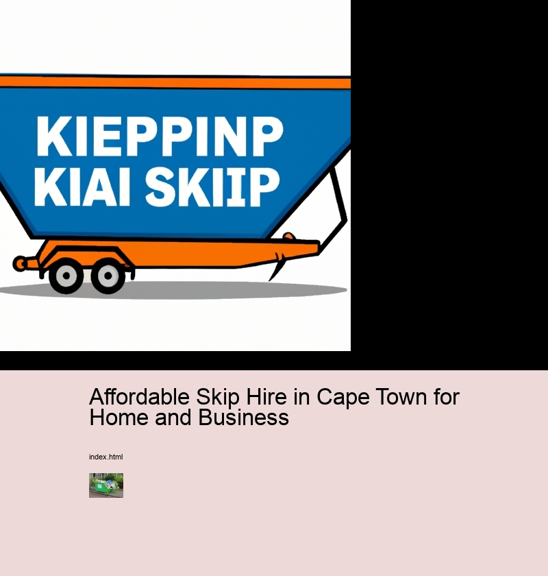

Affordable Skip Hire in Cape Town for Home and Business
Universal waste
Skip hire in Cape Town is an affordable and convenient way to get rid of waste. The benefits of skip hire in the city are numerous, from saving time to reducing stress.
Affordable Skip Hire in Cape Town for Home and Business - Universal waste
- Universal waste
- Transfer stations
- 15 yard dumpster
Moreover, with a skip hire service, you don’t need to make multiple trips carrying heavy loads of rubbish. This saves you both time and money as well as effort. You also won’t have to worry about any possible overfilling fees when using a skip compared with other disposal methods such as bin bags and wheelie bins. In addition, skips come in different sizes depending on how much rubbish needs disposing of; this makes them ideal for smaller jobs too.
Furthermore, hiring a skip means that all waste is disposed of safely and responsibly by professionals who know what they are doing. Therefore, there is no risk of hazardous materials being left behind or anything ending up in landfill incorrectly labelled as something else - making it great for those looking for environmentally friendly ways to dispose of their waste.
Finally, opting for a skip hire service gives customers peace of mind that their waste will be taken care of properly while also offering affordability and convenience - making it an excellent choice for home and business owners alike! By utilising the services offered by affordable skip hire companies in Cape Town, you can ensure that all your rubbish is disposed off quickly and efficiently without breaking the bank!
